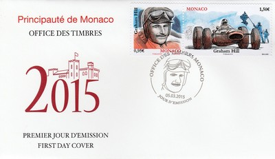

Principality of Monaco
 |
 Issue date: 10th April 2004 Official Monaco Postal Service commemorative stamp issue first day cover featuring 1.20 Euro stamp issued to commemorate the 75th Anniversary of the first Monaco Grand Prix. Created by the Prince Louis II under the impetus given by Antony Noghes, the "Grand- Prix of Monaco" is now a world-famous event, particularly appreciated by the drivers. After an interruption due to the wars, the 62nd Formula 1 Grand Prix will be held from 20th till 23rd May 2004. One of the most eventful races of the 2004 season, the Monaco Grand Prix saw Ferrari driver Michael Schumacher qualify in fourth place (his time was actually fifth best; his brother Ralf qualified second, but was dropped ten places as a penalty for changing engines). Renault driver Jarno Trulli took his first pole position and made it his first race win, breaking the elder Schumacher's streak of race wins; Jenson Button (BAR Honda) was second and Rubens Barrichello (Ferrari) third.  Issue date: 29th April 2009 Issued to commemorate the 80th anniversary of the first Monaco Grand Prix; on April 14, 1929, Prince Pierre opened the circuit for the 1st Formula 1 Monaco Grand Prix. The Englishman Williams won the race in a Bugatti 35B. The Monaco Grand Prix is an unusual stage in the world of the Formula 1 as it takes place downtown on a winding road. The 2009 Monaco Grand Prix was the sixth round of the 2009 Formula One season. It was won by Brawn GP driver Jenson Button, with his team-mate Rubens Barrichello second, and Ferrari's Kimi Raikkonen third. Issue date: 4th December 2009 50th Anniversary of Ayrton Senna's birth - Ayrton Senna was born in Sao Paulo in 1960. He is considered one of the greatest Formula 1 drivers of all time: three times world champion, he won 41 F1 Grand Prix races and was in pole position 65 times. A genuine idol in Brazil, Senna gave generously to his country's charity organizations. After his death on May 1, 1994 at Imola, his sister, Viviane Senna, completed his project to aid the most underprivileged children by creating the Ayrton Senna Foundation.  Issue date: 4th December 2009 Automobile Club de Monaco 120th anniversary block. In 1890, cycling aficionados founded Le Sport Velocipedique Monegasque, which became Sport Automobile et Velocipedique de Monaco in 1907. The current name, Automobile Club de Monaco (ACM), was adopted in 1925. The Rally and the F1 Grand Prix are the two main events organized by ACM. Issue date: 1967 A set of 14 values showing various racing cars, including the following F1 cars: 1950 Alfa Romeo - the 1.5litre supercharged 158 dominated the inaugural F1 season. 1955 Ferrari - the 555 and 625 were modified versions of the 500 for the new 2.5litre engine. 1957 Maserati - the 2.5litre 250F was the class of the field in 1957. 1958 Cooper-Climax - this car started the rear engine revolution. 1960 Lotus Climax - the 16 and 18 were both raced this year, both designed by Colin Chapman, the 18 was the first Lotus mid-engined car. 1961 Lotus-Climax - the 18 and 21 were both raced this year, both designed by Colin Chapman, the 21 gave the works Lotus team its first win. 1962 Cooper-Climax - a variety of chassis were used this year by various teams: T53, T55, T59 and T60. 1963-1966 BRM - the P261 was BRM's first monocoque chassis. Issue date: 2011 A single stamp commemorating the 100th anniversary of Juan Manuel Fangio's birth (24th June 1911 - 17th July 1995). He was nicknamed El Chueco ("knock-kneed") or El Maestro ("The Master"), and dominated the first decade of F1 racing. He won five F1 World Driver's Championships - a record which stood for 46 years until eventually beaten by Michael Schumacher - with four different teams (Alfa Romeo, Ferrari, Mercedes-Benz and Maserati), a feat that has not been repeated since. Many still consider him to be the greatest driver of all time. He has the highest winning percentage in F1 (46.15%) compared to Michael Schumacher's 33.83%. He is the only Argentine driver to have won the Argentine Grand Prix, having won it four times in his career. Issue date: 4th December 2009 50th Anniversary of Ayrton Senna's birth - Ayrton Senna was born in Sao Paulo in 1960. He is considered one of the greatest Formula 1 drivers of all time: three times world champion, he won 41 F1 Grand Prix races and was in pole position 65 times. A genuine idol in Brazil, Senna gave generously to his country's charity organizations. After his death on May 1, 1994 at Imola, his sister, Viviane Senna, completed his project to aid the most underprivileged children by creating the Ayrton Senna Foundation.  Issue date: 20th March 2012 A single stamp issue commemorating the 70th Grand Prix race to be held in Monaco. The first Monaco Grand prix was held in 1929; the first F1 race at Monaco was in 1950 (and was won by Juan Manuel Fangio in an Alfa Romeo). Monaco has been on the F1 calendar ever since, although, there was no race in 1951, 1953 and 1954; in 1952, a year in which the world drivers' championship was run for less powerful Formula Two cars, the race was run to sports car rules instead and did not form part of the World Championship.  Issue date: 1962 A single stamp issue commemorating the 20th Monaco Grand Prix, which was held in 1962. The race was marred by the death of a marshall, who was killed by the dislodged right rear wheel of Richie Ginther's BRM when it collided with four other cars at the Gasometer hairpin on lap 1. The race was won by Bruce McLaren (Cooper), followed by the two Ferrari's of Phil Hill and Lorenzo Bandini. Issue date: 1963 A single stamp issued to commemorate the Euopean Grand Prix of 1963, which was held in Monaco. The race was won by Graham Hill driving the BRM P57, in a time of 2:41:49.7. The race distance was 100 laps of the 1.954 mile circuit.  Issue date: 1992 A single stamp issued to commemorate the 50th Monaco Grand Prix. The race was held on 31st May 1992. The race was won by Ayrton Senna (McLaren) after a close battle with Nigel Mansell (Williams) in the final three laps. Mansell started from pole and lead until lap 71, when he had to pit for new tyres after a suspected puncture. Issue date: 14th March 2013 A single stamp featuring the Maserati 250F.  Issue date: 14th March 2013 A single stamp featuring the Tyrrell P34.  Issue date: 1990 A single stamp featuring Anthony Noghes. Noghes was president of the Monegasque car club and close friend of the ruling Grimaldi family and proposed the idea for a Grand Prix race around the streets of Monaco. The last turn of the Monaco circuit, just before the finish line, is named after him. Issue date: 2007 A single stamp commemorating the 65th Monaco Grand Prix. The 65th Monaco Grand Prix was held on 24th - 27th May 2007, it was quite an uneventful race. Fernando Alonso (McLaren) won, Lewis Hamilton (McLaren) was second and Filipe Massa (Ferrari) was third. Issue date: 5th March 2014 A single stamp featuring Gilles Villeneuve. Villeneuve competed in F1 from 1977 to 1982; he drove for McLaren for most of his first season in F1, but switched to Ferrari for the last two races in 1977. He continued to drive for Ferrari until his death during the final qualifying session at the Belgian Grand Prix in 1982. At the time of his death, Villeneuve was extremely popular with fans and has since become an iconic figure in the history of the sport. He won six Grand Prix races in his F1 career. In 1979, he finished second by four points in the championship to teammate Jody Scheckter.  Issue date: 5th March 2014 A single stamp issued to commemorate Ayrton Senna. Senna was a specialist at the Monaco Grand Prix, he won the race a six times; a record which still stands. In 2007, Prince Albert of Monaco unveiled a plaque in honour of Senna in a ceremony that was attended by Vivane Senna. An exhibition also took place that showcased Senna's victories around Monaco along with his Helmets that were borrowed from Senna's family and a selection of McLaren cars raced by Senna that were brought over from Motegi. Issue date: 5th March 2015 A stamp featuring Michele Alboreto. Alboreto competed in F1 from 1981 to 1994, driving for Tyrrell, Ferrari, Footwork, Lola and Minardi. His best result was runner up in the drivers' championship in 1985 (Ferrari 156/85).  Issue date: 5th March 2015 A stamp featuring Graham Hill. Hill competed in F1 from 1958 to 1975, driving for Lotus, Owen Racing Organisation (BRM cars), Motor Racing Developments (Brabham cars) and ultimately his own team (with a Lola-Ford car). Hill is a double world champion 1962 Owen Racing Organisation (BRM P57) and 1968 (Lotus 49). He is also the only driver ever to win the Triple Crown of Motorsport - the 24 Hours of Le Mans, Indianapolis 500 and the Monaco Grand Prix.  Issue date: 25th June 2015 The Automobile Club de Monaco is a motoring club based in Monaco. The club serves as the governing body for motorsport within Monaco, and organises the prestigious Monaco Grand Prix and Monte Carlo Rally. It is a member of the FIA, representing Monaco as a mobility and sporting club. The Club was founded in 1890 as an association of cyclists, and began to incorporate motorists in 1907. Antony Noghes, the son of the Club's president, organised the inaugural Monaco Grand Prix in 1929 on a circuit around the streets of Monaco, which caused the ACM to be admitted to the AIACR (the forerunner of the FIA) after it had previously been refused entry. In 2015, World Champion Lewis Hamilton secured his first ever Monaco pole position during Saturday's qualifying. In the race, Nico Rosberg took his third consecutive win at Monaco, second win of the season, and the tenth of his career, while Sebastian Vettel finished second. Championship leader Hamilton, who had led for most of the race, moved from first into third place following a "pit stop misjudgement" during a late safety car period, for which his team, Mercedes, later apologised. The renewed McLaren-Honda partnership scored its first points since Honda's return to the sport. Issue date: 1st March 2016 Ronnie Peterson, known by the nickname "Super Swede", was twice runner up in the drivers' championship. He competed in F1 from 1970 to 1978 driving for March, Lotus and Tyrrell. He was runner up in 1971 (March) and 1978 (Lotus). At the 1978 Italian Grand Prix, Peterson's Lotus involved in a multiple car accident running hard into the barriers and catching fire. Trapped in a burning wreck Peterson was pulled free by Hunt, Regazzoni and Depailler before he received more than minor burns, but with severe leg injuries. As Peterson's life was not seen to be any danger focus turned to another trapped driver. Peterson died the following day in hospital Peterson ran a total of 123 Grand Prix races during his career, winning ten of them At his funeral, the pallbearers included Ken Tyrrell, Colin Chapman, James Hunt, Jody Scheckter, John Watson, Emerson Fittipaldi, Gunnar Nilsson and Niki Lauda In 1979, George Harrison paid tribute to him with a song and music video called "Faster".  Issue date: 1st March 2016 The 711 was the car entered by March Engineering for the 1971 season. The aerodynamics were designed by Frank Costin and featured an ovoid front wing described either as the Spitfire (for its shape) or the Tea Tray (for its elevation from the car). The car took no wins, but Ronnie Peterson finished second on four occasions, ending as runner-up in the World Championship. In 1972 Frank Williams ran a 711 chassis fitted with the Ford Cosworth DFV 3.0 in the Belgian Grand Prix, it was driven to fifth place by Carlos Pace.  Issue date: 2005 The Association Internationale des Automobile Clubs Reconnus was founded in Paris on 20 June 1904, as an association of national motor clubs. The association was designed to represent the interests of motor car users, as well as to oversee the burgeoning international motor sport scene. In 1922, the AIACR delegated the organisation of automobile racing to the Commission Sportive Internationale (CSI), which would set the regulations for international Grand Prix motor racing. Upon the resumption of motor racing after the Second World War, the AIACR was renamed as the Ferderation Internationale de l'Automobile. The FIA established a number of new racing categories, among them Formulas One and Two, and created the first World Championship, the Formula One World Drivers' Championship, in 1950.  Issue date: 8th March 2017 A single stamp featuring the Ferrari 156. The Ferrari 156 was built to comply with the then-new F1 regulations that reduced engine displacement from 2.5- to 1.5-litres, similar to the pre-1961 F2 class for which Ferrari had developed a mid-engined car also called the 156. Phil Hill won the 1961 drivers' championship and Ferrari secured the 1961 International Cup for F1 Manufacturers, both victories achieved with the 156. The 1961 version of the 156 was affectionately dubbed "sharknose" due to its characteristic air intake "nostrils". Issue date: 8th March 2017 A single stamp featuring the Matra MS80. The Matra MS80 was the fourth F1 car produced by Matra (following the MS9, MS10 and MS11). The Ford Cosworth DFV-powered car (engine 3000 cc, estimated at around 420 bhp) took Jackie Stewart to the drivers' title in 1969. The MS80 was one of the first F1 racing cars to be designed with "wings" for downforce to increase high-speed tyre grip.  Issue date: 8th March 2017 A single stamp featuring James Hunt and McLaren. Hunt drove for McLaren in the 1976, 1977 and 1978 seasons, driving the McLaren M23 and M26. The 1976 season proved to be one of the most dramatic and controversial on record. While Hunt's performances in the preceding three seasons at Hesketh had drawn considerable praise, there was some conjecture as to whether he could really sustain a championship challenge. In 1976 he became a works McLaren driver, and quickly dispelled many doubters at the first race in Brazil, where, in a hastily rebuilt McLaren M23, he landed pole position in the last minutes of qualifying. Following a dramatic season, Hunt took the drivers' title in 1976.  Issue date: 10th April 2017 A mini sheet coomemorating the 75th anniversary of the Monaco Grand Prix in the 2017 F1 season. Although the 75th time that the Monaco Grand Prix had been held, this was actually the 64th time it has been a round of the F1 World Championship. Sebastian Vettel won the race, the first Ferrari win in Monaco since 2001. Kimi Raikkonen finished second as this was the first Ferrari 1-2 finish since the 2010 German Grand Prix.  Issue date: 19th February 2018 A single stamp featuring the Lotus 49. The Lotus 49 was a F1 racing car designed by Colin Chapman and Maurice Philippe for the 1967 F1 season. It was designed around the Cosworth DFV engine that would power most of the grid through the 1970s. It was one of the first F1 cars to use a stressed-member drivetrain to reduce weight, and the first to be widely copied by other teams. Jim Clark won on the car's debut, in 1967, and it would also provide him with the last win of his career, in 1968. Graham Hill went on to win that year's title and the car continued winning races until 1970. Issue date: 19th February 2018 A single stamp featuring the Mercedes W196. The Mercedes-Benz W196 was a F1 racing car produced by Mercedes-Benz for the 1954 and 1955 F1 seasons. Successor to the W194, in the hands of Juan Manuel Fangio and Stirling Moss it won 9 of 12 races entered and captured the only two world championships in which it competed. Firsts included the use of desmodromic valves and Daimler-Benz developed mechanical direct fuel injection adapted from the DB 601 high-performance V12 used on the Messerschmitt Bf 109E fighter during World War II. Issue date: 19th February 2018 A single stamp featuring Jim Clark. Jim Clark achieved 33 pole positions and won 25 races from his 72 Grands Prix starts in championship races. He is remembered for his ability to drive and win in all types of cars and series.  Issue date: 5th February 2019 A single stamp featuring Alberto Ascari, one of the leading drivers of the early 1950s. Ascari drove for Ferrari from 1950 to 1953, in 1954 he drove for Maserati, Ferrari and Lancia and in 1955 he drove for Lancia. Ascari was killed at Monza whilst testing a Ferrari sports car in 1955. Ascari won the world championship in 1952 and 1953, driving the Ferrari 375 and 500.  Issue date: 5th February 2019 A single stamp featuring the Renault RS01. The Renault RS01 was the first F1 car to be powered by a turbocharged engine, it was also the first to use radial tyres, which were provided by Michelin. The rules of F1 at the time permitted 3.0 litre engines of natural aspiration, with a clause for a 1.5 litre supercharged or turbocharged engine. All of the teams kept initially to the 3.0 litre specification (retaining the Ford Coswrth DFV engines, or continuing to develop in-house flat 12 engines). The car was used from 1977 to 1979, first appearing at the 10th round of the 1977 season at Silverstone. The car proved to be very unreliable, it was cumbersome and overweight - in reality it was little more than an experimental test car. The car was nicknamed ' the yellow teapot' by rival teams. Out of 26 starts, it retired 19 times, and only once scored points. Issue date: 5th February 2019 A single stamp featuring the BRM P57. The BRM P57 was used by various teams from 1961 to 1965. It was used by the works team (Owen Racing Organisation, which had taken over BRM) from 1961 to 1963 - its greatest success coming in 1962, when in the hands of Graham Hill the team won the Constructors' Championship and Hill won the Drivers' Championship. The chassis continued to be used by privateer teams in 1964 and 1965.  Issue date: 22nd March 2019 A mini sheet commemorating the 90th Anniversary of the Monaco Grand Prix. The first race, held on the 14th April 1929, was organised by Antony Noghes and was won by William Grover-Williams driving a works Bugatti Type 35B. The 2019 race, held on the 26th May 2019, was won by Lewis Hamilton driving a works Mercedes AMG F1 W10 EQ Power+.  Issue date: 27th March 2020 A single stamp featuring Niki Lauda, 22nd February 1949 to 20th May 2019. Lauda is a three-time Drivers' Champion, winning in 1975, 1977 and 1984. He is the only driver in F1 history to have been champion for both Ferrari and McLaren, the sport's two most successful constructors. He is widely considered one of the greatest F1 drivers of all time. Lauda was seriously injured in a crash at the 1976 German Grand Prix at the Nurburgring during which his Ferrari 312T2 burst into flames, and he came close to death after inhaling hot toxic fumes and suffering severe burns. He raced again just six weeks later at the Italian Grand Prix. In September 2012 he was appointed non-executive chairman of the Mercedes F1 Team. He took part in negotiations to sign Lewis Hamilton to a three-year deal with Mercedes.  Issue date: 4th March 2020 A single stamp featuring the Cooper T53. The "lowline" Cooper T53 dominated the 1960 season with works drivers Jack Brabham and Bruce McLaren finishing first and second in the championship.  Issue date: 4th March 2020 A single stamp featuring the McLaren M23. The M23 was introduced for the 1973 season and was used by McLaren up to and including the 1977 season. With this car, McLaren achieved three third places, one second place and one first place in the Constructors' Championship. A total of 13 chassis were built, with serial numbers 1 to 12 and 14. No number 13 chassis was built, as it was deemed to be unlucky. The M23 was never the most technically advanced F1 car, but sound preparation and continual development helped it win 16 Grands Prix, two Drivers' and one Constructors' Championships in its lifetime.  Issue date: 5th March 2021 TBD  Issue date: 5th March 2021 TBD  Issue date: 5th March 2021 TBD  Issue date: 8th March 2022 TBD Issue date: 8th March 2022 TBD  Issue date: 8th March 2022 TBD Issue date: 7th March 2023 TBD  Issue date: 7th March 2023 TBD Issue date: 7th March 2023 TBD  Issue date: 28th April 2023 TBD  Issue date: 9th May 2023 TBD |